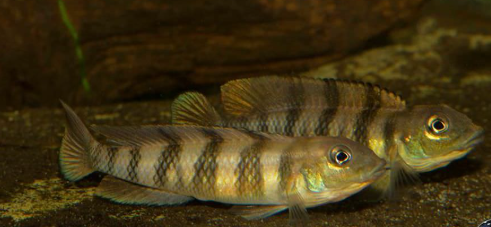

Systématique
- Ordre : Cichliformes
- Famille : Cichlidae
- Genre : Lamprologus
- Espèce : L. tigripictilis
- Auteur : Schelly & Stiassny, 2004

Lamprologus tigripictilis est un cichlidé rhéophile singulier, appartenant à une lignée de Lamprologus fluviatiles d'Afrique centrale, et non aux espèces célèbres du lac Tanganyika. Son nom d'espèce, signifiant "peint comme un tigre", fait référence aux barres verticales sombres très nettes qui ornent ses flancs sur un fond ocre à argenté.
Il mesure environ 7 à 9 cm de longueur totale. Son corps est allongé et hydrodynamique, avec une tête large et des yeux positionnés assez haut, adaptations typiques des poissons vivant dans les courants forts. Contrairement aux espèces lacustres, sa morphologie est plus proche des Steatocranus, avec lesquels il partage souvent son habitat naturel.
C'est un poisson benthique extrêmement territorial et combatif malgré sa petite taille. Lamprologus tigripictilis vit en couple et occupe des territoires très délimités entre les roches. Il est capable de tenir tête à des poissons bien plus grands que lui pour défendre son site de ponte.
En aquarium, il nécessite un décor constitué d'amas rocheux créant de nombreuses failles et cavités. Un brassage puissant de l'eau est recommandé pour stimuler son comportement naturel et assurer une oxygénation maximale. C'est un poisson "de caractère" qui peut s'avérer difficile en bac communautaire s'il n'a pas assez d'espace pour son territoire de fond.
Mode : Ovipare, pondeur sur substrat caché (cavitole).
Le couple choisit une cavité très étroite, souvent une faille entre deux pierres, pour y déposer les œufs. La femelle s'occupe de la garde directe de la ponte, tandis que le mâle patrouille agressivement aux abords du territoire. Les pontes sont généralement de petite taille (30 à 60 œufs).
Après l'éclosion, les larves restent à l'abri dans la grotte jusqu'à la résorption de leur sac vitellin. Les alevins sont ensuite guidés par les parents. En raison du milieu de courant rapide dont ils sont issus, les alevins ont tendance à rester très proches du substrat. Ils acceptent rapidement des nauplies d'artémias ou de la nourriture fine.
Dimorphisme sexuel : Le mâle est généralement un peu plus grand que la femelle et possède des nageoires impaires légèrement plus effilées. Les barres verticales sont souvent plus contrastées chez le mâle dominant. La femelle est plus trapue en période de frai.
Espérance de vie : 5 à 8 ans en aquarium.
L'espèce est endémique du cours inférieur du fleuve Congo, notamment dans la région des rapides près de Kinshasa (Pool Malebo). Elle fréquente les zones de courants violents où elle trouve refuge sous les rochers granitiques.
L'eau y est neutre, très douce et extrêmement agitée, ce qui garantit une saturation en oxygène. Le substrat est majoritairement composé de roches et de gros galets, avec très peu de sédiments fins.
Répartition

Origine naturelle :
- Afrique Centrale : République Démocratique du Congo (Bas-Congo, Pool Malebo).
- Localité type : Rapides de Kinsuka, Kinshasa.
Statut : Espèce peu commune en aquariophilie, principalement maintenue par des spécialistes des cichlidés fluviatiles africains.
Paramètres de maintenance
Température : 24 à 27 °C.
pH : 6,5 à 7,5.
GH : 5 à 12 °dGH.
Courant : Fort à très fort (oxygénation critique).
Volume conseillé : Minimum 100-120 L pour un couple seul.
Régime alimentaire
Régime : Carnivore (micro-prédateur).
Dans la nature, il se nourrit de larves d'insectes, de petits crustacés et d'invertébrés capturés dans le courant ou entre les pierres.
En aquarium, il accepte les nourritures congelées (vers de vase, artémias, mysis) et finit par s'habituer aux granulés coulants de qualité. Il est important que la nourriture tombe rapidement sur le fond.